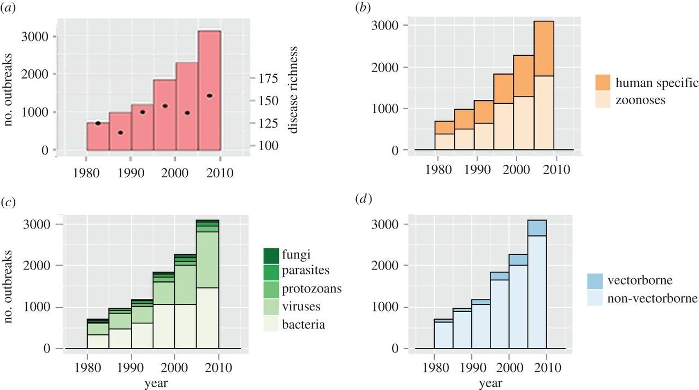

La misma ameba que irrumpió en Toledo en 2018, acaba de dejar sin agua a 27.000 personas en Texas: lo que sabemos de la "ameba come-cerebros"

A principios de septiembre, Josiah McIntyre fue ingresado en un hospital de Lake Jackson, Texas. Tenía 6 años y una rara infección del sistema nervioso central conocida como meningoencefalitis amebiana primaria. Es una enfermedad producida por una ameba, la Naegleria fowleri, que suele vivir en aguas calientes o estancadas y que tiene una mortalidad del 97%.
Tanto es así que, cuando el CDC norteamericano encontró la ameba en varias localizaciones de la ciudad el viernes pasado, la ciudad hizo una "declaración de desastre" y puso a sus equipos a trabajar para sacarla del sistema de aguas del condado. Puede parecer una noticia exótica propia de zonas tropicales, pero hace ya mucho que sabemos que la popularmente llamada "ameba come-cerebros" está en la mayoría de países del mundo.
En 2018, en Torrijos (Toledo), una niña se infectó por la Naegleria fowleri y, aunque sobrevivió, sacó a la luz un rarísimo problema que, como el resto de enfermedades emergentes, va a convertirse en algo mucho más común.
Una ameba rarísima de la que oiremos hablar en el futuro
La Naegleria fowleri es una ameba muy curiosa porque puedes beber litros de agua infectada sin enfermar. para desencadenar la infección, debe entrar por la nariz y actuar sobre el nervio olfativo. Una vez en el bulbo olfatorio del cerebro, se alimenta del tejido nervioso y su proliferación, provoca la meningoencefalitis amebiana primaria. Es decir, empieza a degradar los tejidos provocando, primero, pérdida de olfato, letargo y dolor de cabeza; más tarde, convulsiones, parálisis y, en la inmensa mayoría de los casos, muerte.
Se descubrió por primera vez en el sur de Australia en 1965 y progresivamente se ha ido identificando en numerosos países de América, Europa, África y Asia. No obstante, estamos hablando de poquísimos casos: "30 en los últimos 15 años en EEUU", "unos 140 si ampliamos la búsqueda hasta 1960" explicaba en 2018 Manuel Tordera, director general de Salud Pública de Castilla-La Mancha en el momento.
En principio, esto no significa que se haya ido expandiendo, sino que nuestros sistemas para detectarlos han mejorado. No obstante, en agosto de 2020, varios investigadores de la Universidad de la Laguna y del Instituto de Salud Carlos III publicaron un trabajo que la catalogaban dentro de los "protozoos parásitos emergentes"; es decir, "un grupo de enfermedades que han aparecido en una población en el pasado reciente o que han existido, pero están aumentando rápidamente en incidencia o cambiando su distribución geográfica".
En el caso de la Naegleria fowleri, ser tan rara, juega a nuestro favor. Crecer "rápido" solamente significa tener un puñado de casos más. Por ahora, como es evidente. Porque hablamos de enfermedades que "están emergiendo como un problema de salud global en todo el mundo". Y, en el mismo sentido, Craig W. Lindsley de la Venderbilt University señalaba que en los últimos años esta ameba se había convertido en la principal causa de meningoencefalitis amebiana de Estados Unidos.
No es una sorpresa. En 1980 y 2010, el número de brotes infecciosos en el mundo no ha dejado de crecer. En esos 30 años el número anual de brotes se triplicó en todo el mundo y las enfermedades causantes casi se doblaron. El cambio climático y la movilidad internacional están generando oportunidades que los agentes infecciosos están aprovechando de manera sistemática y eso, al final, se acaba notando.